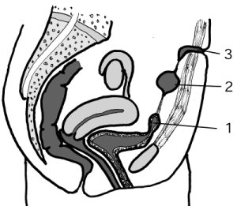
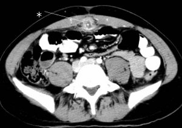

You are here: Urology Textbook > Bladder > Urachal anomalies
Patent Urachus and Urachal Cysts
In fetal development, the bladder is connected via the urachus and umbilical cord to the allantois. Normally, the allantois obliterates, leaving a fibrous strand at the anterior abdominal wall, named urachus. Depending on the failure of the regression, the urachus may be the reason for various anomalies [fig. patent urachus and urachal cysts].
|  |
fig. urachal anomalies: |
Patent Urachus
A patent urachus leads to persistent loss of urine at the umbilicus.
Vesicourachal Diverticulum
If the urachus obliterates only at the level of the umbilicus, a vesicourachal diverticulum develops near the bladder apex. The vesicourachal diverticulum may lead to urinary tract infections and bladder stones.
Umbilical-Urachus Sinus
If the urachus obliterates only at the level of the bladder, a umbilical-urachus sinus develops with an opening at the umbilicus. The umbilical-urachus sinus causes continuous draining, which can heal spontaneously (Lipskar et al, 2010).
Urachal cysts
An urachal cyst is caused if the urachus obliterates at the level of the bladder and umbilicus, but not in between. Urachal cysts may become symptomatic in adults with cyst infection [Abb. superinfected urachal cyst] or as a palpable mass. The treatment of urachal cysts consists of either percutaneous drainage or surgical (laparoscopic) excision of the cyst (Lipskar et al, 2010).
|  | CT of a superinfected urachal cyst (*). With kind permission of Prof. Dr. K. Bohndorf, Augsburg. |
| Bladder physiology | Index | Bladder duplication |
Index: 1–9 A B C D E F G H I J K L M N O P Q R S T U V W X Y Z
References
- Lipskar, A. M.; Glick, R. D.; Rosen, N. G.; Layliev, J.; Hong, A. R.; Dolgin, S. E. & Soffer, S. Z.
- Nonoperative management of symptomatic urachal anomalies.
J Pediatr Surg, 2010, 45, 1016-1019
 Deutsche Version: Fehlbildungen des Urachus'
Deutsche Version: Fehlbildungen des Urachus'